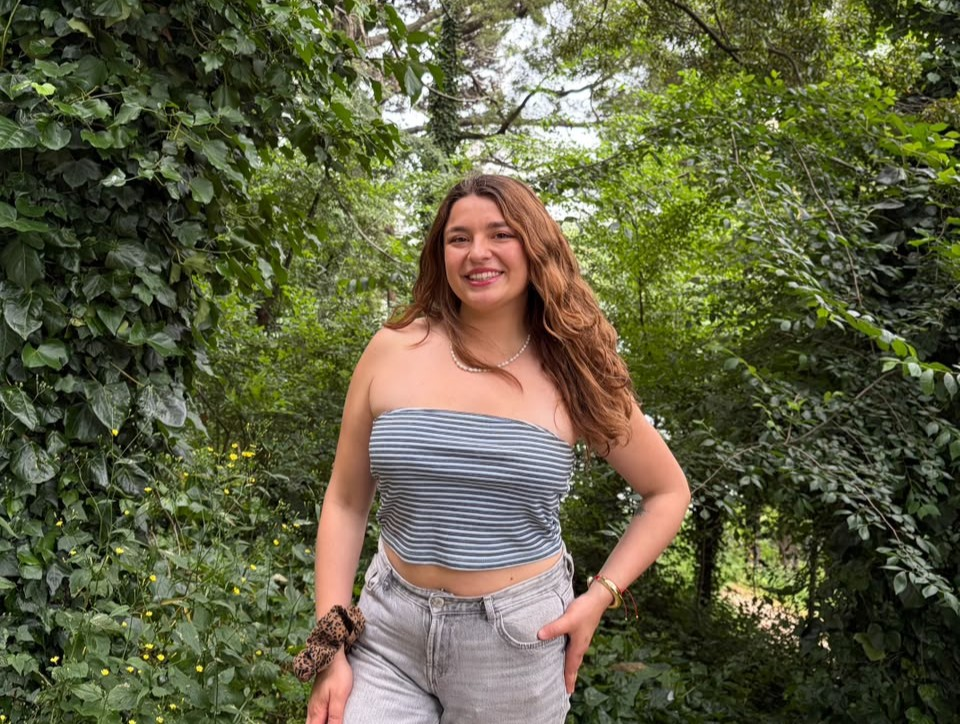

Presidenta
Luciana Aravena Valladares
Me considero una persona motivada, creativa y comprometida, con muchas ganas de aprender, aportar y dar siempre lo mejor de mí. Me encanta enfrentar nuevos desafíos, proponer ideas y, sobre todo, ayudar a las personas. Creo en un liderazgo basado en la empatía, la iniciativa, el trabajo en equipo y la capacidad de transformar ideas en acciones. Hoy quiero poner toda mi energía, entusiasmo y compromiso al servicio de nuestra carrera, con muchas ganas de representar y construir algo bonito junto a ustedes.